This tutorial teaches you how to create a scene like this:
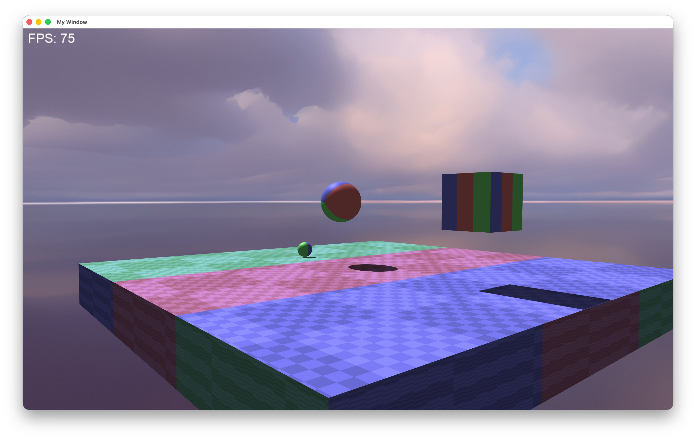
To make this, we'll going to use everything we need, from UI to physics, to components. This will teach you the basics of the engine.
Installation
First of all, we need to install the engine. To install the engine, go to the following GitHub repository and go to the releases page. After downloading the latest release, you can download the executable called atlas. That executable is the core of Atlas. With the executable you can run, create and do whatever with the engine. It is pretty useful and straightforward.
Create a Project
Creating a project with the atlas executable is super simple. Enter a folder and try running atlas create testProject. This will download the necessary things and resources from the latest stable release.
The project structure once created is pretty simple. You just basically need to center with the testProject/main.cpp file which is the basic file we're going to need. First of all, we're going to edit testProject/main.cpp and remove all of its content, because we're going to begin from scratch
Setting up the enviornment
Creating a Window
Creating a Window is the first step to every application. The window is our canvas, and to create it, with Atlas is quite simple. This is the code we're going to need:
int main() {
Window window({.title =
"My Window",
.width = 1600,
.height = 1200,
.mouseCaptured = false});
return 0;
}
Structure representing a window in the application. This contains the main interface for interacting ...
void run()
Starts the main window loop and begins rendering.
If you go see the documentation for Window, you'll see that the constructor can take more arguments, but for now, we like these. This way, we can see the window running normally and our mouse is not captured. Here's how the result looks like:
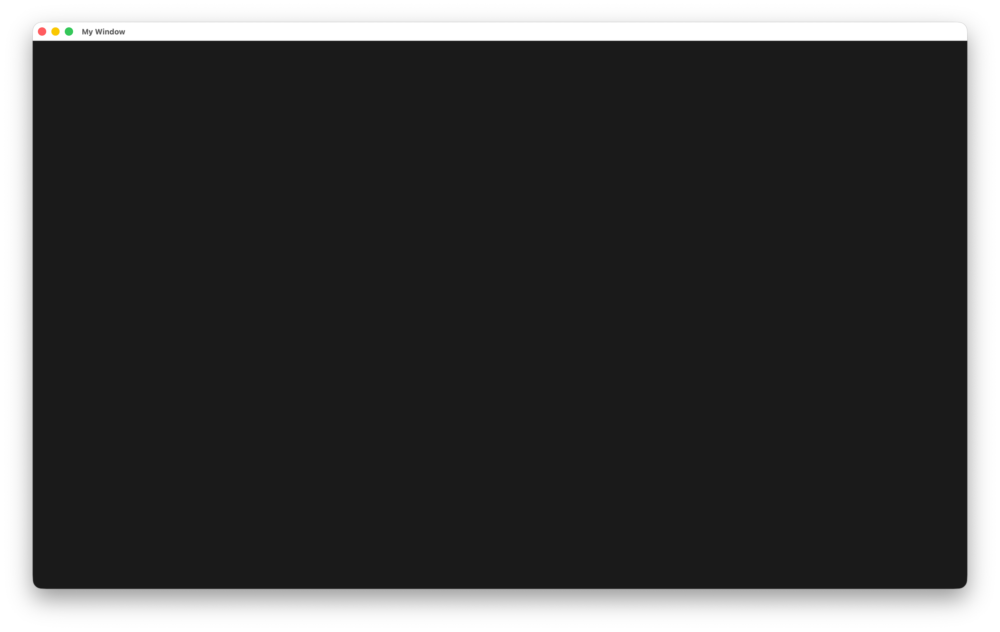
Creating a Scene
Now, scenes are one other important concept in Atlas. Scenes are the base of every small interaction and thing that happens in the game. It organizes objects and more. Here's a rather simple. In this scene, we're just going to create a cube.
class MainScene :
public Scene {
public:
cube.
rotate({45.0f, 45.0f, 0.0f});
}
};
int main() {
Window window({.title =
"My Window",
.width = 1600,
.height = 1200,
.mouseCaptured = false});
MainScene scene;
return 0;
}
Represents a 3D object in the scene, including its geometry, material and every interaction with the ...
void rotate(const Rotation3d &deltaRotation) override
Rotates the object by a certain amount.
Abstract class that represents a 3D scene. It contains all lights and objects that are going to be re...
virtual void initialize(Window &window)=0
Function that initializes the scene. This method is called once by the Window class.
void addObject(Renderable *object)
Adds a renderable object to the window.
void setScene(Scene *scene)
Sets the scene for the window.
CoreObject createBox(Size3d size, Color color={1.0, 1.0, 1.0, 1.0})
Function that creates a box CoreObject with the specified size and color.
Now here, a lot is happening. Look at this fragment:
cube.
rotate({45.0f, 45.0f, 0.0f});
We create a box and we set its color to red. You can tweak the size by touching the first three values. We also add this object to the window. When you create a scene make sure that all the objects that are going to render, you must declare them in class level, so the pointers are not destroyed.
Also, note how we instanciate the scene and set it as the main scene of the window.
If we run this, we get something like this:
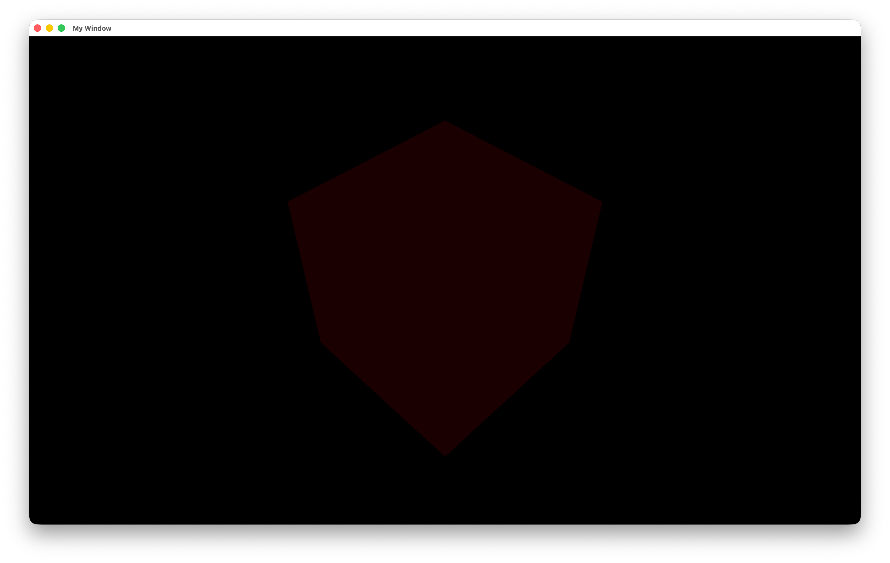
Do you see the cube? Maybe you don't and that's because there aren't any lights. Not even a directional light! So we might need to create one
Creating a Directional Light
Directional Lights simulate the sun. They are simple since they just have a direction. So it's simple to set them like this:
class MainScene :
public Scene {
public:
void initialize(
Window &window)
override {
cube.
rotate({45.0f, 45.0f, 0.0f});
light = DirectionalLight({-0.75f, -1.0f, 0.0},
Color::white());
this->addDirectionalLight(&light);
}
};
Structure representing a directional light in a scene. A directional light emits light in a specific ...
When we run the scene now, we get a better result!
For even better results, we can boost up the ambient light. That will give lighter colors, and better illumination. Try adding this line:
this->ambientLight.intensity = 0.3f;
That gives us this result!
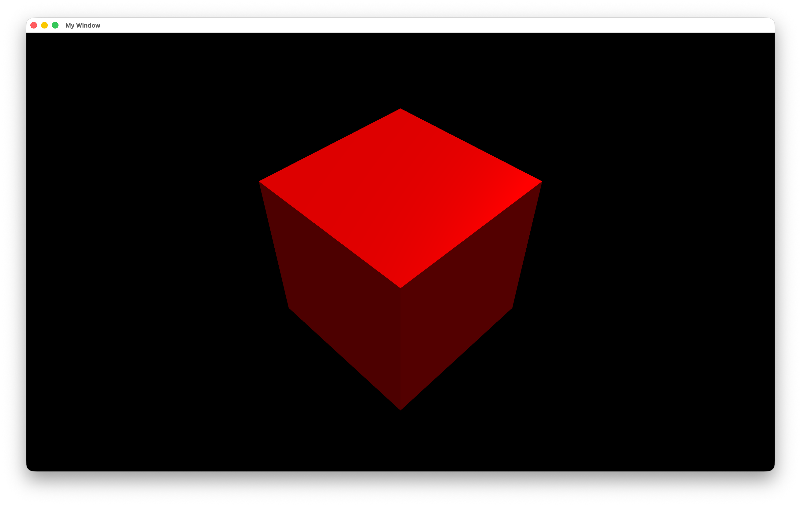
But the scene still fills a bit empty, so let's try adding the skybox.
Adding the Skybox
To add a Skybox, we need to understand that is basically six pictures conforming some sort of dice. You normally have six different textures, build a cubemap and pass it to the skybox. To make a cubemap, you should download the textures here:
Building the Cubemap
Try adding these textures to a new folder in testProject/resources. Then, inside that, we can add skybox. Inside testProject/resources/skybox add the following pictures:
- This as nx.png 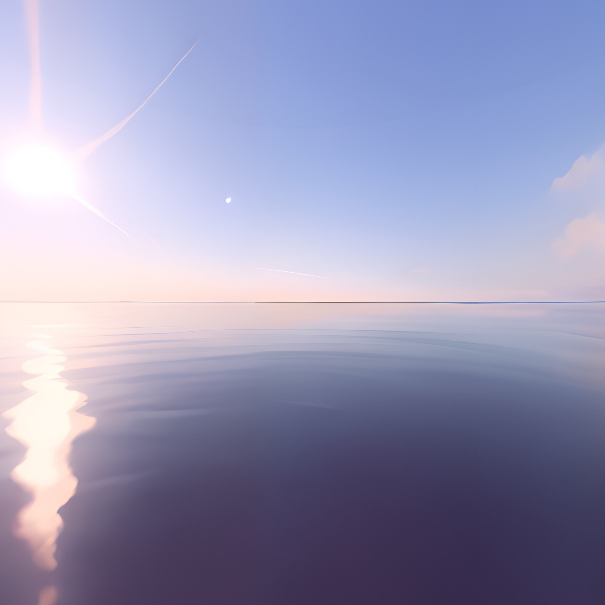
- This as ny.png 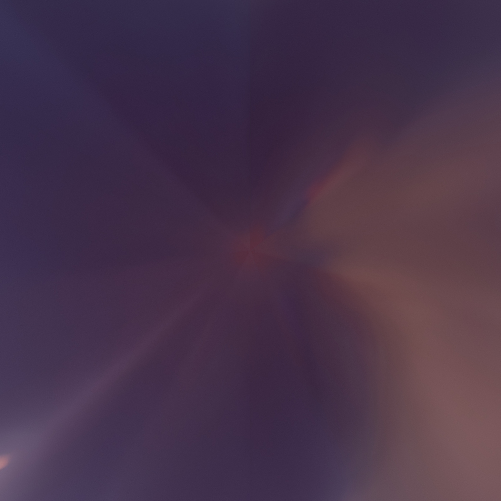
- This as nz.png 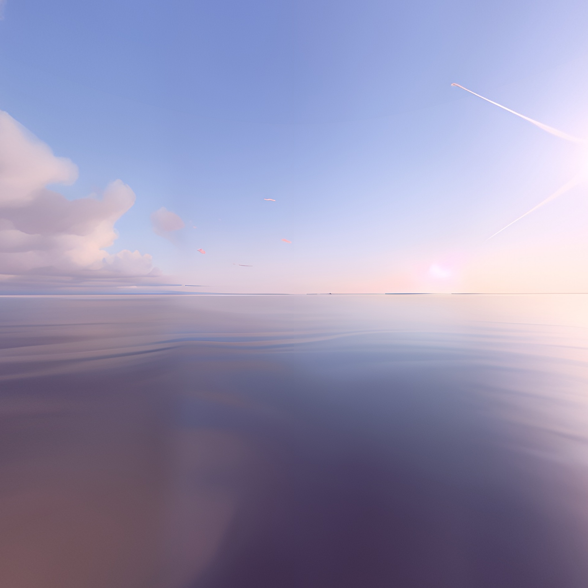
- This as px.png 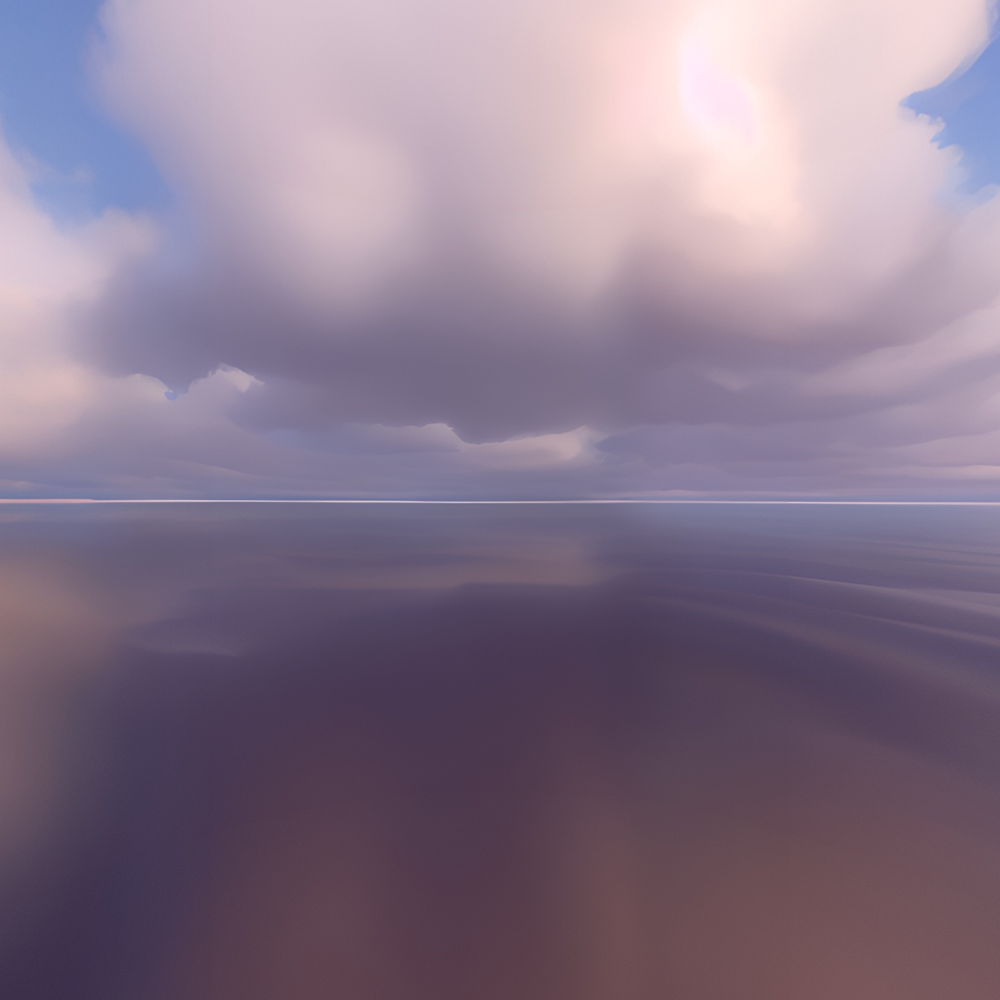
- This as py.png 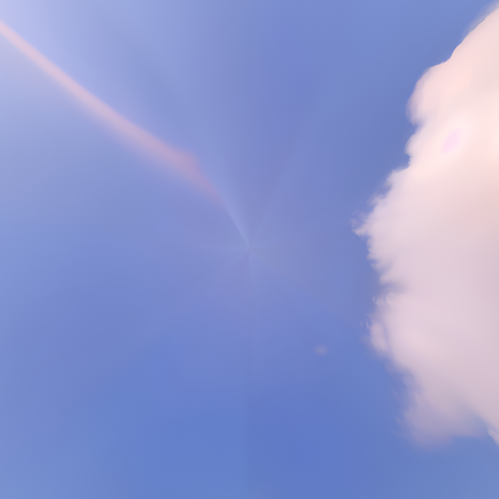
- And this as pz.png
Now let's hop on on building the actual cubemap!
Let's make a function in our main scene that does that.
class MainScene :
public Scene {
public:
"Skybox", {right, left, top, bottom, front, back});
}
void initialize(Window &window) override {
cube.
rotate({45.0f, 45.0f, 0.0f});
light = DirectionalLight({-0.75f, -1.0f, 0.0},
Color::white());
this->addDirectionalLight(&light);
this->ambientLight.intensity = 0.3f;
}
};
ResourceGroup createResourceGroup(std::string groupName, const std::vector< Resource > &resources)
Creates a new resource group containing multiple resources.
Resource createResource(const fs::path &path, std::string name, ResourceType type=ResourceType::File)
Creates a new resource from a file path.
void setRootPath(const fs::path &path)
Sets the root path for the workspace.
Structure that holds the data for a cubemap texture.
static Cubemap fromResourceGroup(ResourceGroup &resourceGroup)
Creates a cubemap from a resource group.
Structure representing a collection of related resources.
Structure representing a single resource in the workspace.
Building the Skybox
After this, is quite simple to build the skybox. Let's add it first to our class properties:
class MainScene :
public Scene {
...
Class that represents a skybox, which is a large cube that surrounds the scene to introduce stunning ...
And then, inside the initialize function, we can add this line at the end:
void display(Window &window)
Displays the skybox in the window.
Cubemap cubemap
The cubemap texture used for the skybox.
@ Skybox
Vertex shader for rendering skyboxes.
This will display the skybox in the window. Now, if we run the scene, we get this:
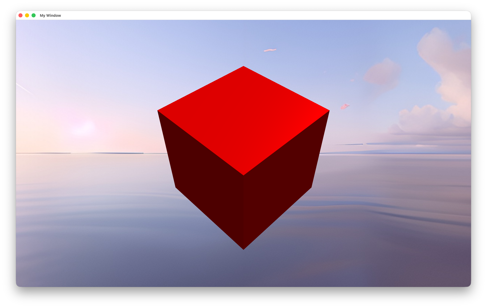
Now, the perspective is a bit weird because the rotation of the cube is a bit odd. Let's fix that by adding a camera.
Adding a Camera
To add a camera, we simply need to create a camera object and set its position. Let's add this to our class properties:
class MainScene :
public Scene {
...
Class representing a camera in 3D space, capable of generating view and projection matrices....
And then, inside the initialize function, we can set its position and make the window use it:
camera.
lookAt({0.0f, 0.0f, 0.0f});
void lookAt(const Point3d &newTarget)
Sets the point where the camera is looking at in 3D space.
void setPosition(const Position3d &newPosition)
Sets the position of the camera in 3D space.
void setCamera(Camera *newCamera)
Sets the camera for the window.
Now, the perspective is way better:
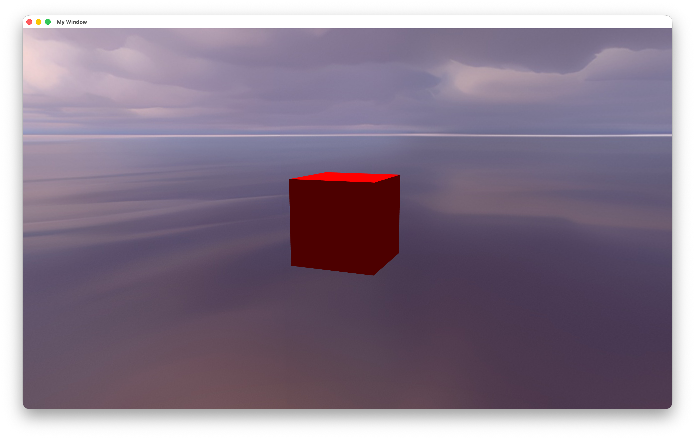
Let's begin building the scene by adding the ground and falling ball.
Setting up the scene
Creating the ground
To create the ground, we can simply create a debug box and scale it to our needs. To make that let's try adding this to our class properties:
class MainScene :
public Scene {
...
Let's remove all of our cube code and add this to the initialize function:
CoreObject createDebugBox(Size3d size)
Function that creates a box CoreObject with a default texture and physics body.
But before adding it to the window, we're going to add a couple stuff. First, we're going to create a texture for it that resembles a double checkerboard.
Creating a texture
To create a texture, we can use the Texture::createDoubleCheckerboard function. This function creates a texture with a double checkerboard pattern. Let's create a texture for the ground:
@ Color
Vertex shader for rendering solid colors.
Structure that holds the data for a texture. It is created from a resource.
static Texture createDoubleCheckerboard(int width, int height, int checkSizeBig, int checkSizeSmall, Color color1, Color color2, Color color3, TextureParameters params={}, Color borderColor={0, 0, 0, 0})
Creates a double checkerboard texture.
We can then set this texture to the ground:
void attachTexture(const Texture &texture) override
Attaches a texture to the object.
After this, we need to make sure the ground doesn't fall. To do that, we can set its mass to infinity, which will sove the issue:
ground.
body->applyMass(0);
std::shared_ptr< Body > body
Gets the physics body associated with the object.
Now we can add the ground to the window:
Doing this, we get this result:
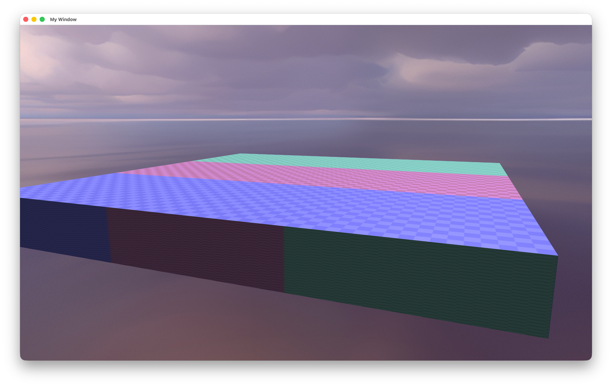
Creating a falling ball
Again, to create a falling ball, we can use the createDebugSphere function. Let's add a new property to our class:
class MainScene :
public Scene {
...
And then, inside the initialize function, we can add this code:
ball.
body->linearVelocity = {2.0, 0.0, 0.0};
ball.
body->friction = 0.5f;
void setPosition(const Position3d &newPosition) override
Sets the position of the object.
CoreObject createDebugSphere(double radius, unsigned int sectorCount=36, unsigned int stackCount=18)
Function that creates a debug sphere CoreObject with the specified radius, sectorCount and stackCount...
Adding this code, we get this result:
But we miss something... the ball has no shadows! Let's add shadows to the directional light by adding this line under the initialization of the light:
void castShadows(Window &window, int resolution=2048)
Function that enables casting shadows from the light.
After this, we get this nice shadowed result: 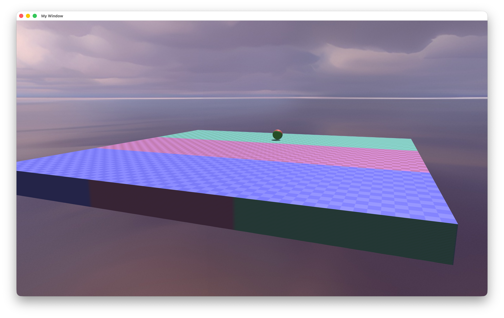
After this, we are ready to add our first compound object.
Creating a compound object
Compound objects are objects that are made up of multiple shapes. To create a compound object, we create a new class that inherits from CompoundObject. Let's create a simple static sphere and cube.
public:
sphere.
body->applyMass(0);
}
};
A Compound object is a GameObject that can be extended by the user to generate objects that encapsula...
void addObject(CoreObject *obj)
Adds a component to the object.
virtual void init()
Initializes the compound object.
void initialize() override
Function to initialize the object. Can be overridden by derived.
Now, let's go ahead and add this compound object to our scene. First, we need to add a new property to our class:
class MainScene :
public Scene {
SphereCube sphereCube;
...
Then, inside the initialize function, we can add this code:
sphereCube = SphereCube();
And we get this result:
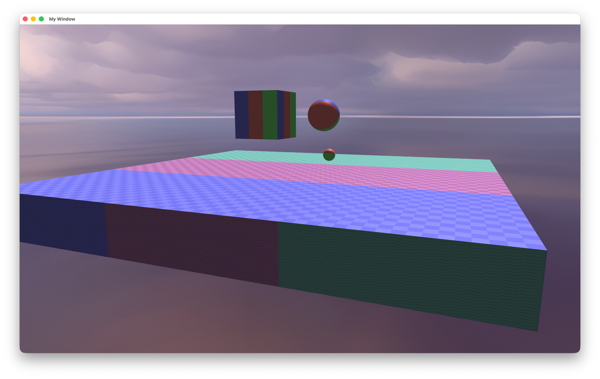
Now, we need to move those shapes a bit! We're going to create our first component to do that.
Creating a component
Creating a component is super simple. Components are classes that inherit from Component and have an update function that is called every frame. Let's create a simple component that moves the objects horizontally sinusoially.
public:
void update(
float deltaTime)
override {
float amplitude = 0.01f;
float position = amplitude * sin(window->
getTime());
object->move({position, 0.0f, 0.0f});
}
};
Behavior or property that can be attached to a GameObject to extend its capabilities.
virtual void update(float deltaTime)
Updates the component each frame. This method is called every frame before rendering.
float getTime()
Gets the current time since window creation.
static Window * mainWindow
Static pointer to the main window instance. Used for global access to the primary window.
And we can now apply this component to our compound object from our initialize function in our scene:
sphereCube.addComponent<HorizontalMover>(HorizontalMover());
Now, if we run the scene, we get this result:
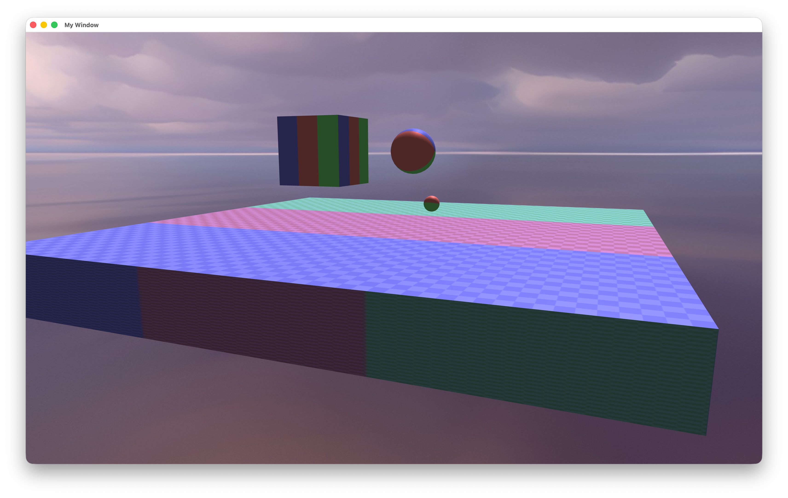
Now we just have to add one thing, the text on the screen.
Adding UI
To add a text, we first declare the text object in our class properties:
class MainScene :
public Scene {
SphereCube sphereCube;
...
Represents a text object in the game world. It allows rendering of text with a specific font,...
Then, inside the initialize function, we can add this code:
@ Text
Vertex shader for rendering text.
static Font fromResource(const std::string &fontName, Resource resource, int fontSize)
Creates a font from a resource.
If we run this, we get this result:
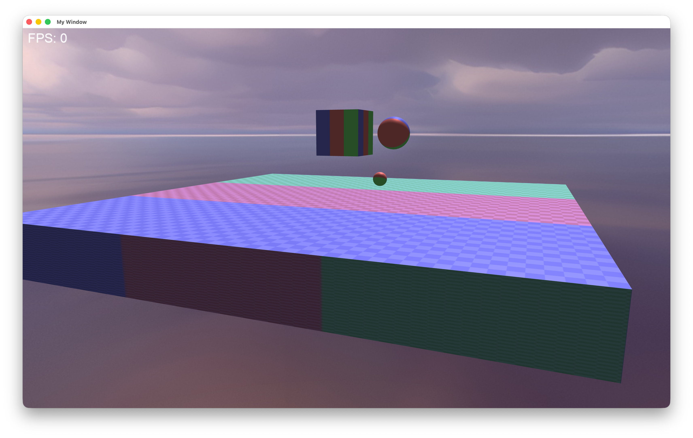
But we're not done yet. We need to update the text every frame to show the current FPS. To do that, we can create a new component that updates the text every frame. The thing is that we need to pass the text object to the component and we want our component to just work with text objects. So we can create a TraitComponent that works with text objects. Here's how we can do that:
public:
object->content = "FPS: " + std::to_string(fps);
}
};
Window * getWindow()
Gets the window associated with the component's GameObject.
Component that is specifically tied to a certain type of GameObject. It cannot be added to objects th...
virtual void updateComponent(T *object)
Updates the component with a typed reference to the GameObject it is bound to.
float getFramesPerSecond()
Gets the current frames per second.
And we can now apply this component to our text object from our initialize function in our scene:
void addTraitComponent(T &&existing)
Adds a trait component to the object. A trait component is a component that is tied to a specific typ...
Conclusion
And that's it! We have our final scene!
public:
void init() override {
this->addObject(&cube);
sphere.
body->applyMass(0);
this->addObject(&sphere);
}
};
public:
object->content = "FPS: " + std::to_string(fps);
}
};
public:
void update(
float deltaTime)
override {
float amplitude = 0.01f;
float position = amplitude * sin(window->
getTime());
object->move({position, 0.0f, 0.0f});
}
};
class MainScene :
public Scene {
CoreObject ground;
CoreObject ball;
DirectionalLight light;
Camera camera;
SphereCube sphereCube;
public:
"Skybox", {right, left, top, bottom, front, back});
}
void initialize(Window &window) override {
camera = Camera();
camera.
lookAt({0.0f, 0.0f, 0.0f});
4096, 4096, 640, 80,
Color(0.5, 0.5, 1.0),
Color(0.5, 0.5, 1.0),
Color(0.375, 0.375, 0.75));
ground.
body->applyMass(0);
ball.
body->linearVelocity = {2.0, 0.0, 0.0};
ball.
body->friction = 0.5f;
sphereCube = SphereCube();
sphereCube.addComponent<HorizontalMover>(HorizontalMover());
light = DirectionalLight({-0.75f, -1.0f, 0.0},
Color::white());
this->addDirectionalLight(&light);
this->ambientLight.intensity = 0.3f;
}
};
int main() {
Window window({.title =
"My Window",
.width = 1600,
.height = 1200,
.mouseCaptured = false});
MainScene scene;
return 0;
}
@ Texture
Vertex shader for rendering textured objects.
 1.14.0
1.14.0